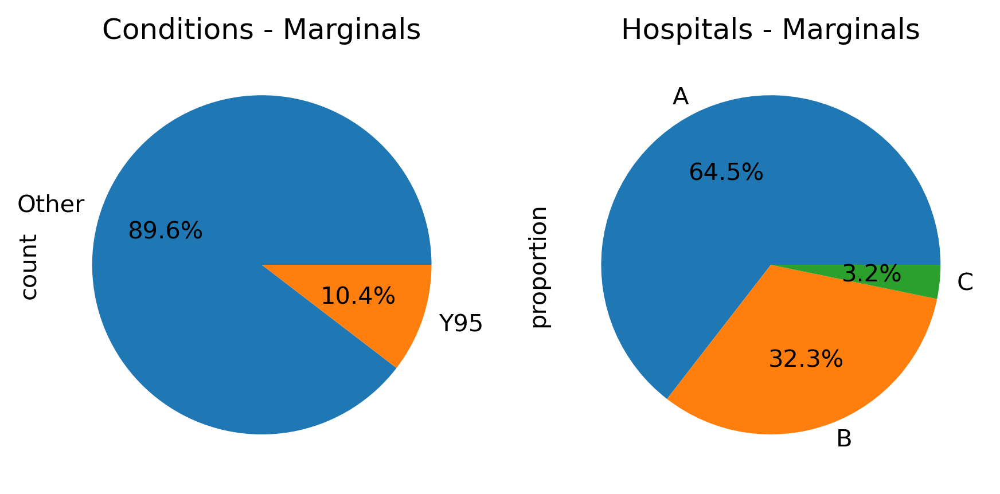
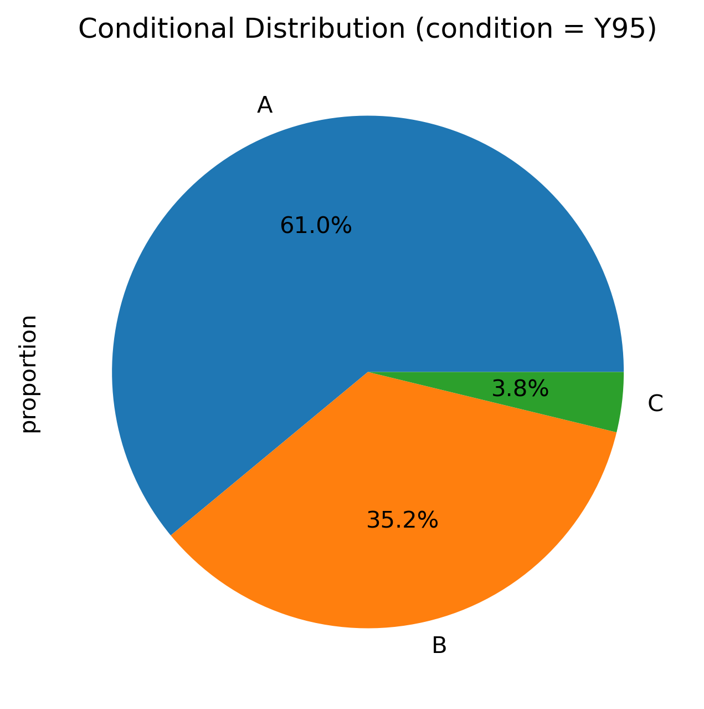
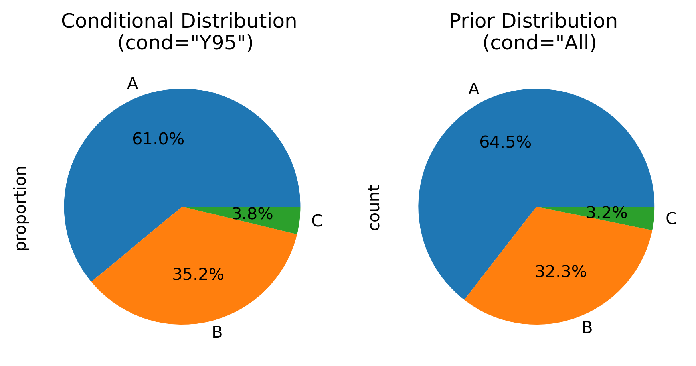
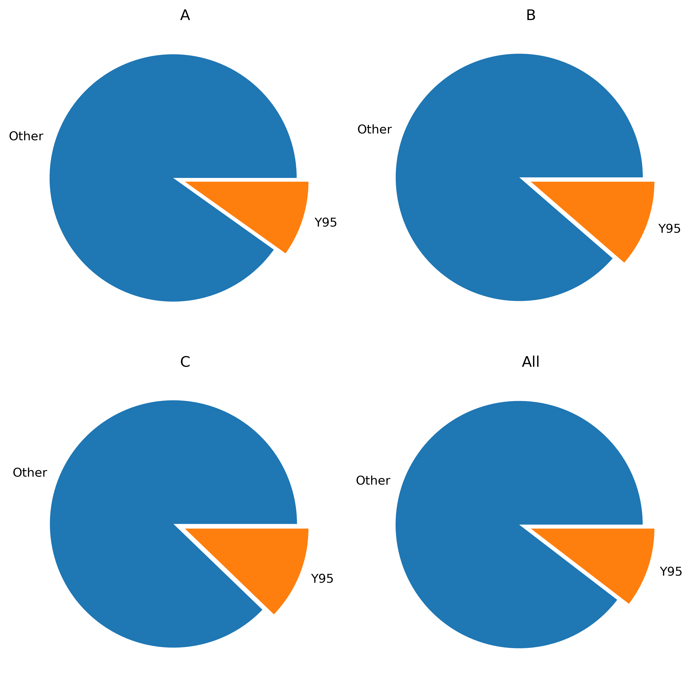
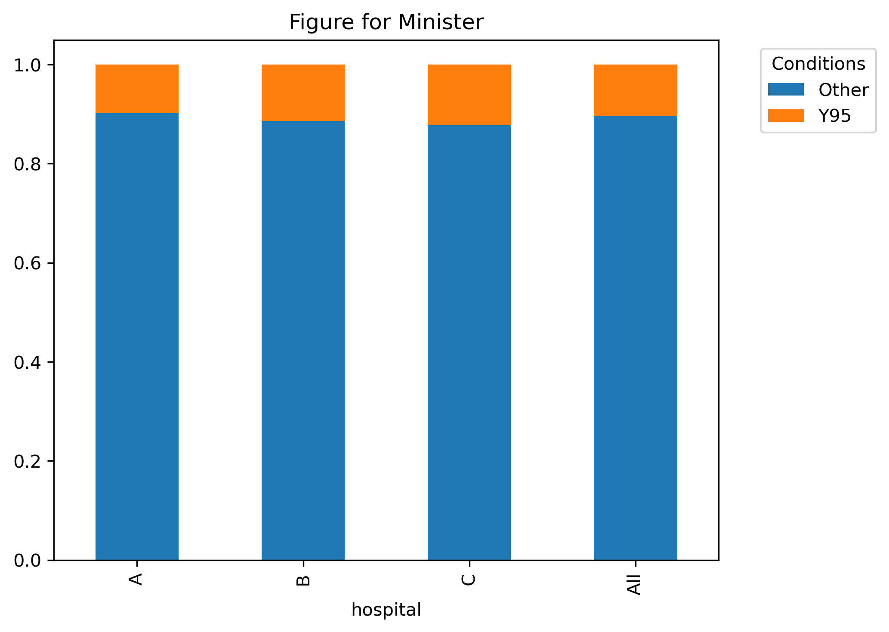
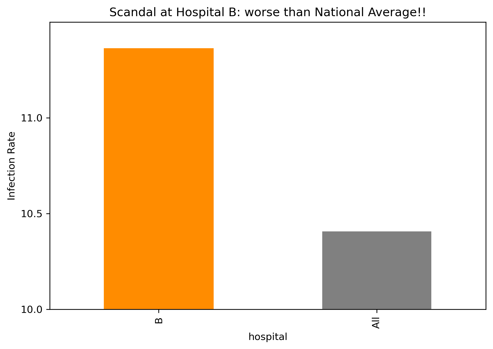
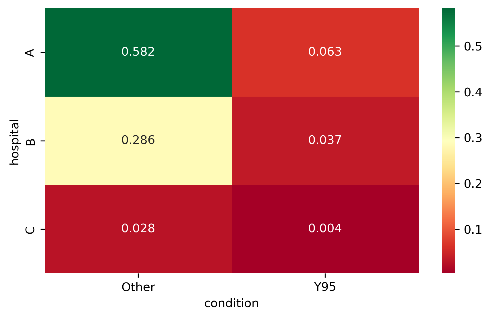
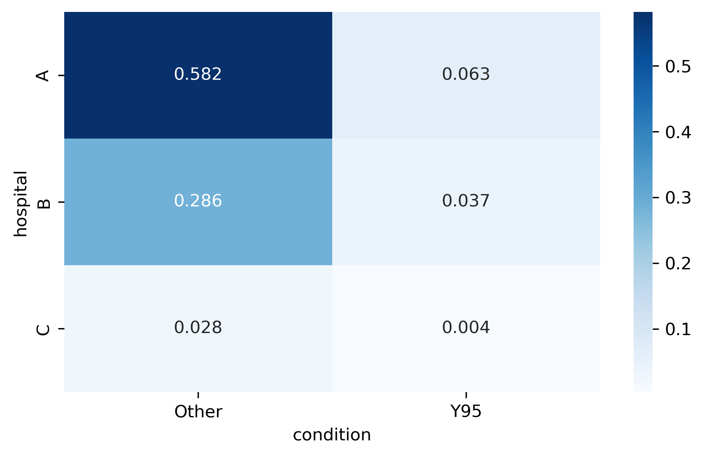
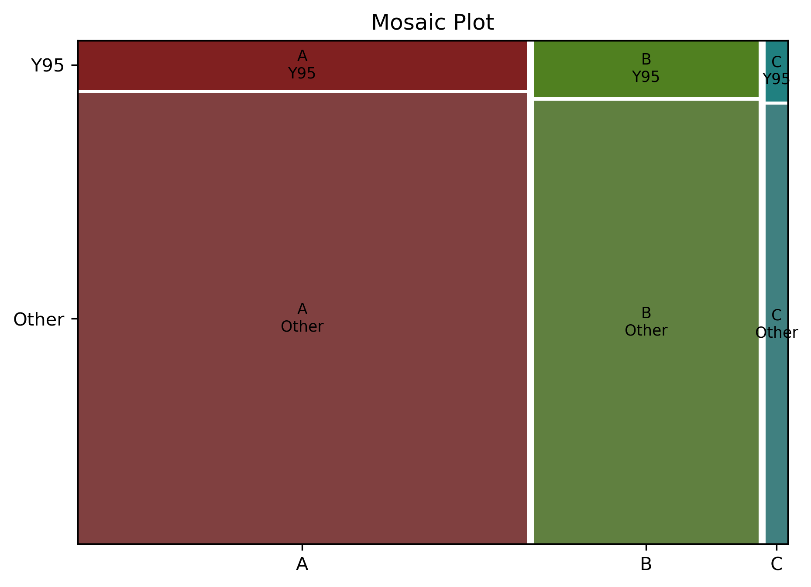

Data Visualization
Scenario
A health minister was told that hospital-associated infections are a major concern in health care. She orders a review of all hospitals who submit the conditions of all their current patients in standardized ICD-10 format.
The minister asks:
“Which hospital looks most worrying in this report?”
Group Challenge
Imagine you are the analyst team preparing a short briefing for the minister.
You have obtained a long table of patient-level data from all hospitals in the following format (first few rows shown)
Code
rng = np.random.default_rng(42)
# hospital sizes
N = {"A": 10000, "B": 5000, "C": 500}
# infection rates
p = {
"A": 0.10,
"B": 0.12,
"C": 0.12
}
dfs = []
for hospital, n in N.items():
condition = rng.choice(
["Y95", "Other"],
size=n,
p=[p[hospital], 1 - p[hospital]]
)
dfs.append(
pd.DataFrame({
"hospital": hospital,
"condition": condition
})
)
df = pd.concat(dfs, ignore_index=True)
df.head()| hospital | condition | |
|---|---|---|
| 0 | A | Other |
| 1 | A | Other |
| 2 | A | Other |
| 3 | A | Other |
| 4 | A | Y95 |
For simplicity:
- each patient has only 1 condition and is represented by 1 row
- there are thousands of ICD codes, but we have summarized to only two levels: “Y95” and “Other”
- What is the meaning for ICD-10 code “Y95” ?
- What type of variables are available in the data
- How should we summarize the finding?
First Steps (Python/Pandas)
Code
df.shape: (15500, 2)
df.dtypes: hospital object
condition object
dtype: object
df.describe():
hospital condition
count 15500 15500
unique 3 2
top A Other
freq 10000 13887… this is important for data management but not for the minster.
Prior Distributions - baselines
First we would want to have a baseline for conditions (regardless of hospital)
condition
Other 13887
Y95 1613
Name: count, dtype: int64Jargon:
Because we ignore the variable hospital this amounts to summing each condition over all hospitals (= marginalization)
\[ N(\mbox{Condition}) = \sum_{\mbox{Hospital}} N(\mbox{Hospital, Condition}) \]
Rather than numbers, it might be easier to report this as proportions
Code
condition
Other 0.895935
Y95 0.104065
Name: proportion, dtype: float64So the prior probability for condition=“Y95” is about 10%. In the disease context this is also called “prevelance”.
And similarly for Hospitals:
\[ N(\mbox{Hospital}) = \sum_{\mbox{Condition}} N(\mbox{Hospital, Condition}) \]
Code
hospital
A 0.645161
B 0.322581
C 0.032258
Name: proportion, dtype: float64How to visualize proportions that sum to 100% ?
Code

Conditional Distribution
The minister (and we) suspect a different number of patients with condition=“Y95” in different hopsitals. Let’s first filter the data for the condition of interest.
| hospital | condition | |
|---|---|---|
| 4 | A | Y95 |
| 17 | A | Y95 |
| 27 | A | Y95 |
| 51 | A | Y95 |
| 68 | A | Y95 |
Jargon: Such a filter step is also called conditioning
Now let’s summarize this subset of patient-wise data per hospital (and normalize)
Code
Conditional Distribution:
hospital
A 0.610043
B 0.352139
C 0.037818
Name: proportion, dtype: float64Code

- Should we just report this plot to the minister?
- Which hospital is the worst?
Conditionals and Priors
Code
marg_summary = df["hospital"].value_counts()
fig, ax = plt.subplots(1, 2, figsize=FIGSIZE)
count_summary.plot.pie(autopct="%1.1f%%", ax=ax[0])
marg_summary.plot.pie(autopct="%1.1f%%", ax=ax[1])
ax[0].set_title('Conditional Distribution \n (cond="Y95")')
ax[1].set_title('Prior Distribution \n (cond="All)')
plt.show()
- Prior (marginal) distributions define our expectations: more patients \(\to\) more diseases
- P(Hospital|Condition) \(\ne\) Pr(Condition|Hospital)
Code
# this will only calculate row margins, since each column (hospital) is normalized to 1
tab = pd.crosstab(df["condition"], df["hospital"],
normalize="columns", margins=True)
fig, axes = plt.subplots( 2, 2, figsize=(8, 8))
axes = axes.flatten()
for ax, col in zip(axes, tab.columns):
tab[col].plot.pie(
ax=ax,
legend=False,
explode=[0.1, 0.0],
ylabel=""
)
ax.set_title(col)
plt.tight_layout()
plt.show()
- not good for many categories
- not good for comparisons (areas)
Suggestion
Code

Data analysis shows that the rates of hospital-associated infection (ICD code “Y95”) are very similar across hospitals and similar to the overall average rate. In hospital “C” there is a slightly higher level.
Breaking News
A newspaper heard about our study and got access to the same data. The following article was published the next day:
A confidential goverment report found that hospital “B” has much higher rate of infections than the national average. The health minister did not respond to our questions.
Code
tab_sub = 100*tab.drop(columns=["A","C"], index="Other")
ax = tab_sub.T.plot.bar(legend=None, color="grey")
ax.set_ylim([10,11.5])
ax.set_yticks([10, 10.5, 11])
ax.set_ylabel("Infection Rate")
ax.patches[0].set_color("darkorange")
plt.title('Scandal at Hospital B: worse than National Average!!')
plt.tight_layout()
plt.show()
How would you comment on this article?
Summary
- Visualization is important
- Visualization can mislead
- Conditioning can be confusing
- Marginal Models set expectations
- Avoid Pie charts
- Need statistical model
Appendix: Joint Distributions
Let’s try to visualize all proportions at once
Code

What is the problem with this visualization?
- Colour-encoding of numbers has to be done carefully.
- Consider colour blindness, meaning of divergent colours?
- area has no meaning

Another useful encoding can be by area size (Mosaic plot)
Code

Sometimes it is useful to show the joint distributions with the margins
Code
Joint Distribution with Margins:
condition Other Y95 All
hospital
A 0.581677 0.063484 0.645161
B 0.285935 0.036645 0.322581
C 0.028323 0.003935 0.032258
All 0.895935 0.104065 1.000000Based on the margins and a model (independence of variables!) we can also calculate the expected proportion of in a given cell.
For example:
\[ \begin{array}{ll} Pr(\mbox{Hospital=A, Condition=Y95}) = \\ Pr(\mbox{Hospital=A}) * Pr(\mbox{Condition=Y95}) = \\ 0.645 * 0.104 = 0.06708 > 0.645161 \\ \end{array} \]